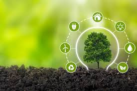

<!DOCTYPE html>
<html lang="en">
<head>
    <meta charset="UTF-8">
    <meta name="viewport" content="width=device-width, initial-scale=1.0">
    <title>Fruit Perú</title>
    <link rel="shortcut icon" href="/img/favicon.ico" type="image/x-icon">
    <link rel="stylesheet" href="./css/valores.css">
    
</head>
<body>
    
</body>
</html>
     
<main>
    <h1>Nuestros Valores</h1>

    <div class="container__card">
                
        <div class="card__father">
            <div class="cards">
                
                <div class="img__back"></div>
                    <h3>Orientación al Cliente</h3>
                <div class="text">
                    <p>Como nuestra prioridad estamos orientados a desarrollar relaciones a largo plazo 
                        con nuestros clientes, satisfaciendo sus necesidades, ofreciéndoles productos y 
                        servicios de calidad.</p>
                </div>
            </div>
        </div>

        <div class="card__father">
            <div class="cards">
                
                <div class="img__back"></div>
                    <h3>Calidad</h3>
                <div class="text">
                    <p>Estamos orientados y altamente capacitados a cumplir minuciosamente con los estándares
                        internacionales de calidad e innovacion. Esto garantiza la satisfacción del cliente y 
                        la fidelidad a la marca.</p>
                </div>
            </div>
        </div>
 
        <div class="card__father">
            <div class="cards">
                
                <div class="img__back"></div>
                    <h3>Confianza</h3>
                <div class="text">
                    <p>Todo nuestro equipo humano esta convencido y altamente comprometido a alcanzar los objetivos
                        trazados y a cumplir con nuevos retos que se presenten asi como las responsabilidades eficientemente.

                    </p>
                </div>
            </div>
        </div>

        <div class="card__father">
            <div class="cards">
                
                <div class="img__back"></div>                    
                    <h3>Sostenibilidad</h3>
                    <div class="text">
                        <p>Sabemos lo importante que es controlar el impacto ambiental, por lo que Las 
                            prácticas agrícolas sostenibles generan una imagen positiva de la empresa 
                            ante los consumidores conscientes del medio ambiente.</p>
                    </div>
                </div>
            </div>
        </div> 
    </div>
        
</main>
